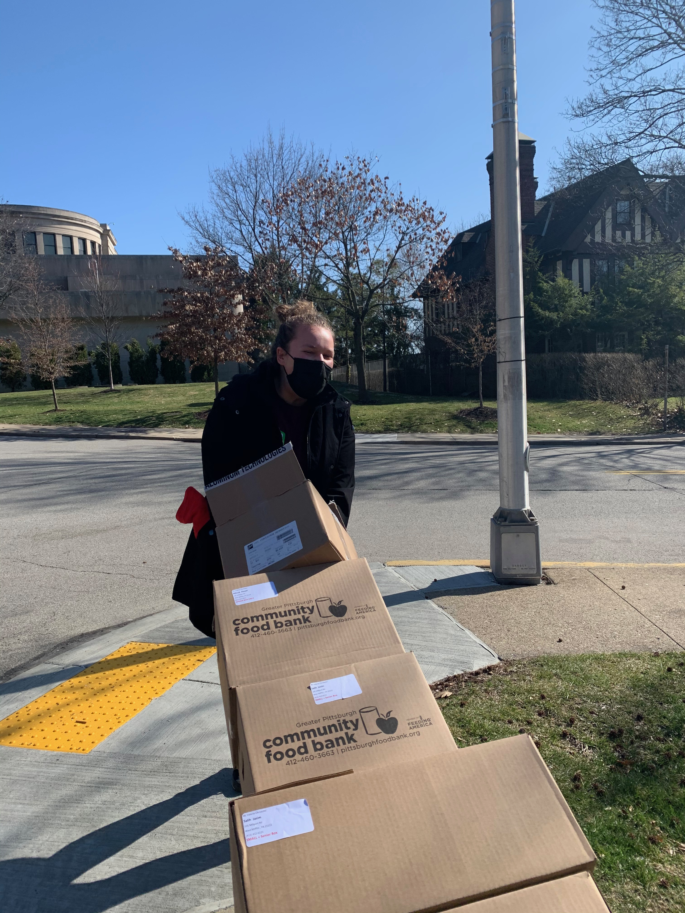
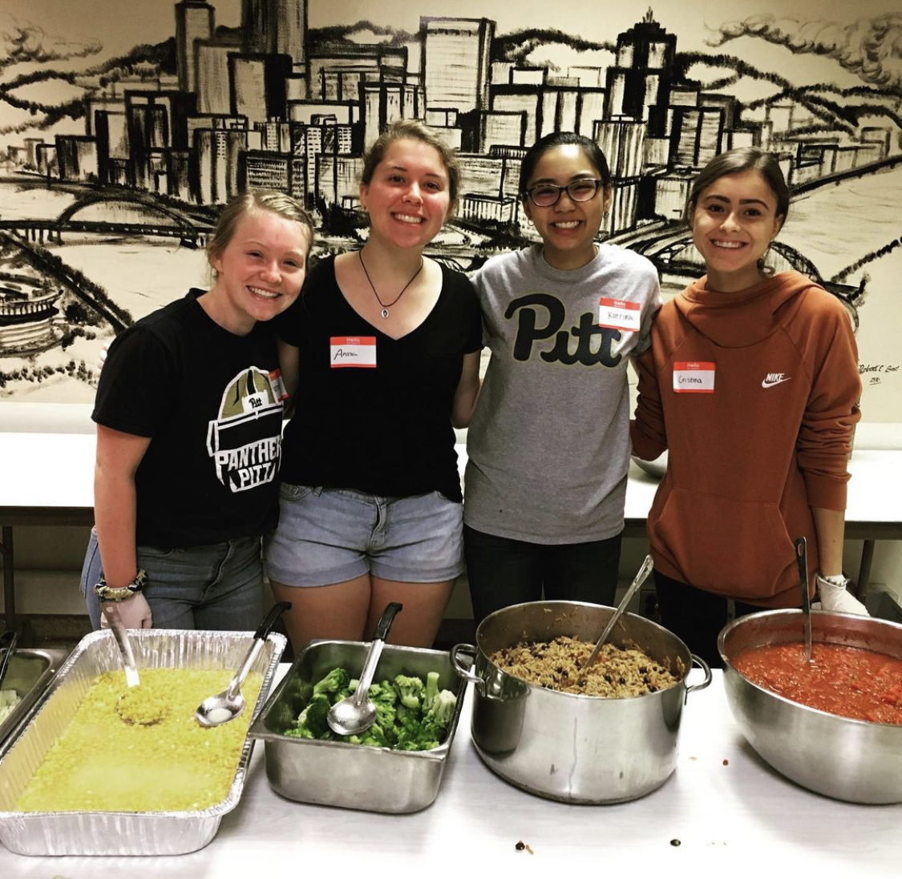

Past Volunteering Events

During the University of Pittsburgh's Be a Good Neighbour Day, students helped out at the Islamic Center of Pittsburgh Food Pantry and the Earthen Vessels Outreach.

Students dance with the residents of Little Sisters of the Poor Nursing home at their annual Mardi Gras Ball.

In order to help provide healthy food options to those in need, students volunteer to serve with Produce to the People, a Greater Pittsburgh Community Food Bank.